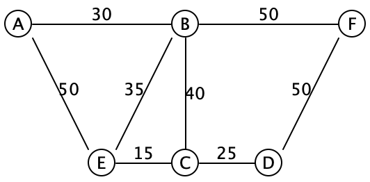

Lecture 32: Minimum Spanning Trees
Minimum spanning trees: Borůvka’s, Prim’s and Kruskal’s algorithms
Early in the 20th century, the challenge of electrifying towns and cities was one of the pressing issues facing civil engineers. In 1926, a Moravian academic named Otakar Borůvka considered the problem and came up with a solution. A workable solution needed to:
-
Connect all the towns to the power stations, either directly or indirectly, so that everyone who was supposed to receive electricity actually did.
-
At least for an initial deployment, simply ensuring that everyone gets connected is more important than making sure that there are backup connections for each place.
-
Building an initial deployment is expensive, so minimizing costs is important.
More impressively, Borůvka expressed the solution not solely in terms of wires and electricity, but in terms of an abstract weighted graph. The lack of backup connections implies that a solution must be a tree (as opposed to a graph that might have multiple paths or cycles); the connectedness requirement means it should be a spanning tree (as opposed to a disconnected forest of multiple trees); and the cost focus means it should be a minimum spanning tree (as opposed to a more expensive tree).
(Unfortunately, Borůvka wrote up his solution in Czech, in a relatively obscure Czech journal, and few European or American computer scientists heard about the result. It was rediscovered several times, and finally became better known when Sollin rediscovered it in 1965 and published it...in French. Coming up with a useful result only matters when people find out about it!)
A fellow Czech researcher, Vojtěch Jarník, built upon Borůvka’s result and simplified it, and published a related algorithm in 1930. That algorithm, too, was not widely known until 1957, when Robert Prim rediscovered it. Today, the fastest known algorithms for solving the minimum spanning tree problem are a hybrid of Borůvka’s and Prim’s results.
Prim’s algorithm, as we’ll see below, is closely related to a third minimum-spanning-tree algorithm, discovered by Joseph Kruskal in 1956: they differ only in the ordering that they choose edges to add to the tree. However, the detailed bookkeeping of the two algorithms is very different, and it’s worth studying both.
32.1 Running example
class Vertex { ArrayList<Edge> outEdges; } class Edge { Vertex from, to; int weight; } class Graph { ArrayList<Vertex> vertices; }
Consider the following graph:

The edges are drawn without directional arrows, and the numbers on each edge represents their weight.
Do Now!
List the edges (e.g., AB,BF,EC etc) of three different spanning trees for this graph. Find a minimum spanning tree for this graph. How can you be confident that it’s actually minimal? What strategy did you use to pick the edges?
One possible minimum spanning tree for this graph are the edges AB,BE,BF,EC,CD. Let’s see how to compute that.
Do Now!
Suppose we want to construct a spanning tree; what edge should we start with? Why?
It seems intuitively obvious that we should start with the edge EC, since it’s the cheapest edge in the entire graph. How can we be certain that that edge must be in the final minimum spanning tree? Let’s think about it by contradiction: suppose it wasn’t part of the minimum spanning tree. Then we must have some other spanning tree, that is supposedly minimal, that managed to find some other path connecting E and C. We’re going to improve this spanning tree, and lower its overall weight. That other path connecting E to C has some weight W. Let’s deliberately introduce a cycle, by adding the edge EC to this path. This cycle now has weight W+15. We can break the cycle by removing any of its edges, and all the nodes will remain connected. So we are free to choose whichever edge we like, and any of the other edges will be more expensive than edge EC (why?). Which in turn means that deleting some other edge will result in a spanning tree that has weight W + 15 - (something greater than 15), which is a lower total weight than the tree that we started with, contradicting our assumption that we had a minimum spanning tree.
Let’s make this argument concrete: suppose that path were EA,AB,BC. Then the path weight is 50+30+40 = 120. We add the edge CE to make a cycle of weight 120+15 = 135. Now we can choose to remove any of the four edges in that cycle, and the overall tree is still connected. If we delete AE, the total weight drops to 135 - 50 = 85, which is lower than the 120 that we started with. If we drop AB, it drops to 105, and if we drop BC, it drops to 95. All of those are better than the 120 that we started with, so evidently we should have chosen edge EC to begin with.
Do Now!
Which edge should we select next?
Surely, we should select the next cheapest edge, CD, since any other path that connects C to D will cost more than 25.
Do Now!
Which edge comes next? Why?
There are actually two plausible answers here. We could choose edge BE, because it’s the cheapest edge connected to our current tree that doesn’t create a cycle. Or we could choose edge AB, because it’s the cheapest edge anywhere that doesn’t create a cycle. These two choices lead, respectively, to Prim’s and Kruskal’s algorithms.
Do Now!
How many edges must there be in a spanning tree, in terms of the total number V of vertices and E of edges in the overall graph? Why? Prove it.
-
Prim’s algorithm essentially decides to build a single tree at all times, and then works to be sure that it is minimal. Every step makes some obvious progress to the end goal, but the proof of correctness is a bit subtle.
-
Kruskal’s algorithm guarantees minimality at all times, but builds many trees that eventually link up into a single final answer. This is somewhat reminiscent of how heapsort had two invariants to preserve, and chose to preserve one at all times and then fix up the other one. Here we break the "one tree" invariant, and restore it over time.
32.2 Prim’s algorithm
Prim’s approach gows a single tree, starting from the globally cheapest edge, until it produces a spanning tree. At each stage, it chooses the cheapest edge that makes the tree bigger without creating a cycle. We obviously need to keep track of the edges chosen for our tree. But beyond that, Prim’s approach implies that we need to keep track of
-
The set of vertices we haven’t connected yet: since all the connected vertices are part of a single tree, then we should only take edges that connect to a new, not-yet-connected vertex.
-
The set of candidate edges available, sometimes called the frontier (because it is the boundary between the known part of the graph and the unknown)
-
An efficient way to choose the cheapest candidate edge
Do Now!
What data structure do we have that’s really efficient at adding items and keeping track of the minimum (or maximum) item among them?
Let’s keep track of the set of unconnected vertices by a HashMap<Vertex, Boolean>, that initially maps each vertex to false, and as we connect the vertex, we update the map to true to indicate it’s now connected.
To keep track of our candidate edges, we’ll use a priority queue, this time using a min-heap (as we used in the previous lecture). As we connect each vertex, we add its out edges to this priority queue, and then we’ll process edges in order of removal from that min-heap, ensuring that we always choose the cheapest edge available to us at any given point.
Exercise
From the description above, try implementing Prim’s algorithm yourself.
As it turns out, we can generalize the argument made above: we don’t need to start with the globally cheapest edge. We can start from any vertex in the graph, and follow the algorithm sketch above.
The following pseudocode is one possible implementation of Prim’s algorithm:
// The final resulting tree ArrayList<Edge> tree = new ArrayList<Edge>(); // The set of connected vertices HashMap<Vertex, Boolean> connected = new HashMap<Vertex, Boolean>(); // The priority queue of candidate edges PriorityQueue<Edge> frontier = new PriorityQueue<Edge>(); If the graph's vertices are empty, just return the empty tree Initialize the connected map to map each vertex to false Pick some initial vertex, v. Set its connectedness to true, and add all its edges to the frontier. While(the frontier is not empty) Pick the cheapest edge from the frontier, suppose it connects X to Y. If Y is already connected to the tree: Discard this edge // it would create a cycle Else: Add the edge XY to the tree Mark Y as connected Add all the out-edges of Y to the frontier Return the tree
Exercise
Work through the code above, for the running example graph, and determine what the resulting tree would be.
-
Let’s say we start from vertex A. After the initialization step, we have
Tree: [] Connected: [A] Frontier: [AB(30), AE(50)]
-
We select the cheapest edge from the frontier, and since B is not yet connected, we use this edge and add the out-edges of B to our frontier:
Tree: [AB(30)] Connected: [A, B] Frontier: [BA(30), BE(35), BC(40), AE(50), BF(50)]
Do Now!
Why do we add BA to the frontier? -
We select the cheapest edge from the frontier. Since A is already connected, we discard this edge.
Tree: [AB(30)] Connected: [A, B] Frontier: [BE(35), BC(40), AE(50), BF(50)]
-
We select the cheapest edge from the frontier, and since E is not yet connected, we use this edge and add the out-edges of E to our frontier:
Tree: [AB(30), BE(35)] Connected: [A, B, E] Frontier: [EC(15), EB(35), BC(40), AE(50), BF(50), EA(50)]
Do Now!
Why do we add EA, when AE is already in the frontier? Why add EB? -
We select the cheapest edge from the frontier, and since C is not yet connected, we use this edge and add the out-edges of B to our frontier:
Tree: [AB(30), BE(35), EC(15)] Connected: [A, B, E, C] Frontier: [CE(15), CD(25), BC(40), CB(40), AE(50), BF(50), EA(50)]
-
We select the cheapest edge from the frontier. Since E is already connected, we discard this edge.
Tree: [AB(30), BE(35), EC(15)] Connected: [A, B, E, C] Frontier: [CD(25), BC(40), CB(40), AE(50), BF(50), EA(50)]
-
We select the cheapest edge from the frontier, and since D is not yet connected, we use this edge and add the out-edges of D to our frontier:
Tree: [AB(30), BE(35), EC(15), CD(25)] Connected: [A, B, E, C, D] Frontier: [DC(25), BC(40), CB(40), AE(50), BF(50), EA(50), DF(50)]
-
We select the cheapest edge from the frontier. Since C is already connected, we discard this edge.
Tree: [AB(30), BE(35), EC(15), CD(25)] Connected: [A, B, E, C, D] Frontier: [BC(40), CB(40), AE(50), BF(50), EA(50), DF(50)]
-
We select the cheapest edge from the frontier. Since C is already connected, we discard this edge.
Tree: [AB(30), BE(35), EC(15), CD(25)] Connected: [A, B, E, C, D] Frontier: [CB(40), AE(50), BF(50), EA(50), DF(50)]
-
We select the cheapest edge from the frontier. Since B is already connected, we discard this edge.
Tree: [AB(30), BE(35), EC(15), CD(25)] Connected: [A, B, E, C, D] Frontier: [AE(50), BF(50), EA(50), DF(50)]
-
We select the cheapest edge from the frontier. Since E is already connected, we discard this edge.
Tree: [AB(30), BE(35), EC(15), CD(25)] Connected: [A, B, E, C, D] Frontier: [BF(50), EA(50), DF(50)]
-
We select the cheapest edge from the frontier, and since F is not yet connected, we use this edge and add the out-edges of F to our frontier:
Tree: [AB(30), BE(35), EC(15), CD(25), DF(50)] Connected: [A, B, E, C, D, F] Frontier: [BF(50), EA(50), DF(50), FB(50), FD(50)]
-
At this point we could stop, since we have connected all the vertices. Or, mechanically, we could work through the remaining edges of the frontier until it empties out, at which point our algorithm terminates with the tree above.
Do Now!
At several points, we added edges to the frontier that had duplicate edge weights. Does it matter which of those edges we take to use in our spanning tree (assuming they don’t create any cycles)?
(Obviously the algorithm sketch above is pointlessly inefficient, since it processes each edge twice. At the cost of some slightly more tedious bookkeeping, we could prevent that: we could choose to add an edge only if its endpoint was not already connected, which would automatically avoid doubling back on any edge. But this isn’t strictly necessary for the overall correctness of the algorithm.)
Exercise
Prove that this algorithm actually works. Use a variant of the reasoning above (about why the globally minimum edge should be used) to argue that whenever we connect a new vertex to the growing tree, we could not possibly have produced a better path to get there, and therefore the tree is indeed minimal so far.
Exercise
Produce a big-O worst-case runtime analysis for Prim’s algorithm.
32.3 Kruskal’s algorithm
-
Each of the trees being grown so far
-
An efficient way to tell if both endpoints of an edge belong to the same tree
That second point is critical: we didn’t have to worry about that with Prim’s algorithm because there was only ever one tree, so asking if both endpoints were in the "same" tree amounted to asking if they were both in the only tree, which could be handled by the connected map. Here, we need to keep track of which tree, which means we’re going to need more than a boolean.
Do Now!
Brainstorm some ideas for how to keep track of this information. How can we tell apart two distinct trees?
We could try to generalize the map a bit, mapping vertices to other vertices somehow. But to which ones? And do we need to update many vertices in the map, each time we join two trees via an edge? This sounds potentially horribly inefficient, but there is a very clever data structure that we can use to make this work to our advantage.
32.3.1 The Union/Find data structure
The goal of the union/find data structure is to allow us to take a set of items (such as nodes in a graph) and partition them into groups (such as nodes connected by spanning trees) in such a way that we can easily find whether two nodes are in the same group, and union two disjoint groups together. Intuitively, we accomplish this by naming each group by some representative element, and then two items can be checked for whether they are in the same group by checking if they have the same representative element.
32.3.1.1 Example
Suppose each of our vertices was given a string name (as we’ve been labelling the vertices so far). Then the union-find data structure is a HashMap<String, String> that maps (the name of) each node to (the name of) a node that it is connected to. Initially, every node name is mapped to itself, signifying that every node is its own representative element, or equivalently, that it is not connected to anything.
Recall the example from above:
 Our HashMap will map every node name to itself:
Our HashMap will map every node name to itself:
Representatives, visually:
+---+---+---+---+---+---+ A B C D E F
Node: | A | B | C | D | E | F |
+---+---+---+---+---+---+
Link: | A | B | C | D | E | F |
+---+---+---+---+---+---+
Spanning tree so far:
EC(15) CD(25) AB(30) BE(35) BC(40) FD(50) AE(50) BF(50)
Representatives, visually:
+---+---+---+---+---+---+ A B D E F
Node: | A | B | C | D | E | F | ^
+---+---+---+---+---+---+ |
Link: | A | B | E | D | E | F | C
+---+---+---+---+---+---+
Spanning tree so far: (C E)
Representatives, visually:
+---+---+---+---+---+---+ A B E F
Node: | A | B | C | D | E | F | ^
+---+---+---+---+---+---+ / \
Link: | A | B | E | E | E | F | C D
+---+---+---+---+---+---+
Spanning tree so far: (C D) (C E)
Do Now!
Careful! Why must we union the representatives of two nodes, and not the nodes themselves?
Next we add edge AB(30):
Representatives, visually:
+---+---+---+---+---+---+ A E F
Node: | A | B | C | D | E | F | ^ ^
+---+---+---+---+---+---+ | / \
Link: | A | A | E | E | E | F | B C D
+---+---+---+---+---+---+
Spanning tree so far: (A B) (C D) (C E)
We add edge BE(35). That means we add a link from the representative for B (which is A) to the representative for node E (which is E):
Representatives, visually:
+---+---+---+---+---+---+ E F
Node: | A | B | C | D | E | F | ^
+---+---+---+---+---+---+ /|\
Link: | E | A | E | E | E | F | A C D
+---+---+---+---+---+---+ ^
|
B
Spanning tree so far: (A B) (B E) (C D) (C E)
Finally, we add the edge FD(50): after this, every node has the same representative, and therefore all nodes are connected:
Representatives, visually:
+---+---+---+---+---+---+ E
Node: | A | B | C | D | E | F | ^
+---+---+---+---+---+---+ /|\
Link: | E | A | E | E | E | D | A C D
+---+---+---+---+---+---+ ^ ^
| |
B F
Spanning tree so far: (A B) (B E) (C D) (C E) (D F)
32.3.2 Putting the union/find data structure to work
The full Kruskal’s algorithm needs a union/find data structure to handle efficiently connecting components, and also needs a list of the edges used by the algorithm:
HashMap<String, String> representatives; List<Edge> edgesInTree; List<Edge> worklist = all edges in graph, sorted by edge weights; initialize every node's representative to itself While(there's more than one tree) Pick the next cheapest edge of the graph: suppose it connects X and Y. If find(representatives, X) equals find(representatives, Y): discard this edge // they're already connected Else: Record this edge in edgesInTree union(representatives, find(representatives, X), find(representatives, Y)) Return the edgesInTree
To find a representative: if a node name maps to itself, then it is the representative; otherwise, “follow the links” in the representatives map, and recursively look up the representative for the current node’s parent.
There are additional heuristics for speeding this algorithm up in practice, and they make for a very efficient algorithm. Unfortunately, analyzing these heuristics is beyond the scope of this course, but you can look up the “path-compression” heuristic if you are curious.
Do Now!
Again, why must we only ever union two representatives, and not two arbitrary nodes?